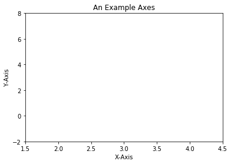
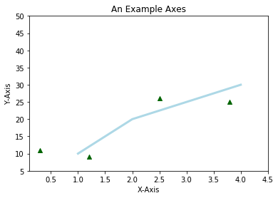
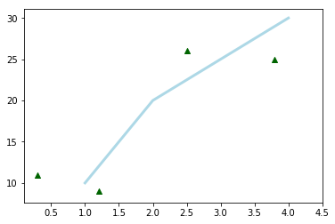
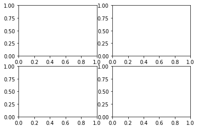
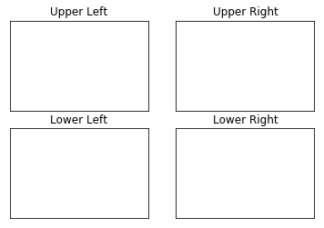
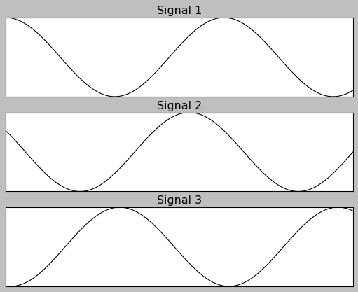

Matplotlib 第二课
Table of Contents
1 part-I : Figures_Subplots_and_layouts
1.1 OO-manner to plot (heavy way but good for complex situation)
1.1.1 backends
This is why mlpt is so successful, it has multiple backends, some like the JVM works for cross-platform. when you encount some error, you should specify which backend you are using
%matplotlib inline import matplotlib print ( matplotlib.__version__ ) print( matplotlib.get_backend() ) matplotlib.use('nbagg')
1.1.2 some components
- Figure contains (Subplot, Axes)
- Axes contains (2 or more Axis)
- Subplot is the white area, it's the Axes on grid system.
1.1.3 Figures
By default, mpl will not show anything until told to do so.
- create a figure:
plt.figure() - show it:
plt.show() - resize the height and width:
plt.figrue( figsize = (111,222) ) - resize to twice big:
plt.figure( figsize = plt.figaspect(2.0) )
1.1.4 create and show
import numpy as np import matplotlib.pyplot as plt fig = plt.figure() plt.show()
<matplotlib.figure.Figure at 0x7f251169eeb8>
1.1.5 resize the figure
fig = plt.figure( figsize=(111, 222) ) # specify the size of figure fig = plt.figure( figsize = plt.figaspect(2.0)) # enlarge size to 2X
<matplotlib.figure.Figure at 0x7f25114df390>
1.1.6 Axes( and subplot )
- Axes
- subplot
All plotting is done with respect to an Axes, Axes is made up of Axis and many other things. An Axes must belong to a Figure( and only one Figure ).An Subplot is just an Axes on a grid system.
- create a Figure:
plt.figure() - show it:
plt.show() - resize the height and width:
plt.figrue( figsize = (111,222) ) - resize to twice big:
plt.figure( figsize = plt.figaspect(2.0) ) - <– add an Axes to Fiture:
fig.add_axesorfig.add_subplot - <– set attributes of Axes(xlim, ylim, xlabel, ylabel, title):
ax.set( xlim=,ylim=,xlabel=,...) - <– or set each attribute separately:
ax.set_xlim()ax.set_ylim()
fig = plt.figure() ax = fig.add_subplot(111) # basically, 1 row and 1 column ax.set( xlim=[0.5, 4.5], ylim=[-2, 8], title='An Example Axes', ylabel='Y-Axis', xlabel='X-Axis') plt.show()

1.1.7 Basic Plotting
Most plotting happens on Axes.
- plot: draws points with lines connecting them.
- scatter: draw unconnected points, can scaled and colored by additional variables
- create a Figure:
plt.figure() - show it:
plt.show() - resize the height and width:
plt.figrue( figsize = (111,222) ) - resize to twice big:
plt.figure( figsize = plt.figaspect(2.0) ) - add an Axes to Fiture:
fig.add_axesorfig.add_subplot - set attributes of Axes(xlim, ylim, xlabel, ylabel, title):
ax.set( xlim=,ylim=,xlabel=,...) - or set each attribute separately:
ax.set_xlim()ax.set_ylim() - <– plotting on axes:
ax.plot(xlist, ylist, color, linewidth) - <– scatter on axes:
ax.scatter(xlist, ylist, color, marker)
fig = plt.figure() ax = fig.add_subplot(111) # basically, 1 row and 1 column ax.set( xlim=[0.0, 4.5], ylim=[5, 50], title='An Example Axes', ylabel='Y-Axis', xlabel='X-Axis') ax.plot( [1,2,3,4], [10, 20, 25, 30], color='lightblue', linewidth=3) ax.scatter( [0.3, 3.8, 1.2, 2.5], [11, 25, 9, 26], color='darkgreen', marker='^') ax.set_xlim(0.1, 4.5) plt.show()

1.2 pyplot-manner to plot (simple way but unsafe for complex situation)
Interestingly, all the above codes are in an OO-manner to plot something, it is a little heavy:
- create a figure, resize it
- create an axes or subplot on that figure, set attrs
- plotting something on that axes, set attrs
Many times, we just want to open ipython, plot something to see, we don't want figure, don't want axes, we only need plotting somthing.
pyplot Enter!
- all methods of an Axes object exist as a function in the pyplot module.
plt.xlim(1, 10), pyplot callsax.set_xlim(1, 10)on "current" Axes. - plt assumes you plot and set.attr on current Figure and Axes
- if no Figure and Axes, matplotlib will create one for you
| OO-manner | pyplot-manner |
|---|---|
| 1. create a Figure: | xxx |
plt.figure() |
xxx |
| 2. show it: | xxx |
plt.show() |
xxx |
| 3. resize the height and width: | xxx |
plt.figrue( figsize = (111,222) ) |
xxx |
| 4. resize to twice big: | xxx |
plt.figure( figsize = plt.figaspect(2.0) ) |
xxx |
| 5. add an Axes to Fiture: | xxx |
fig.add_axes or fig.add_subplot |
xxx |
| 6. set attributes of Axes(xlim, ylim, xlabel, ylabel, title): | xxx |
ax.set( xlim=,ylim=,xlabel=,...) |
xxx |
| 7. or set each attribute separately: | 1. set.attrs |
ax.set_xlim() ax.set_ylim() |
plt.xlim() |
| 8. plotting on axes: | 2. plotting |
ax.plot(xlist, ylist, color, linewidth) |
plt.plot(...) |
| 9. scatter on axes: | 3. scatter |
ax.scatter(xlist, ylist, color, marker) |
plt.scatter(...) |
# ax.plot( [1,2,3,4], [10, 20, 25, 30], color='lightblue', linewidth=3) # ax.scatter( [0.3, 3.8, 1.2, 2.5], [11, 25, 9, 26], color='darkgreen', marker='^') # ax.set_xlim(0.1, 4.5) plt.plot( [1,2,3,4], [10, 20, 25, 30], color='lightblue', linewidth=3) plt.scatter( [0.3, 3.8, 1.2, 2.5], [11, 25, 9, 26], color='darkgreen', marker='^') plt.xlim(0.1, 4.5) plt.show()

1.3 Multiple Axes (a numpy array of subplot)
If you want your axes to be on a regular grid system, using
plt.subplots(...) to create a figure and add the axes to it automatically.
It will create a figure for you and a 2D numpy array of subplot objects.
Note that, plt.subplot() is different from plt.subplots()
One really nice thing about plt.subplots() is that, when it's called with
no arguments, it creates a new figure with a new subplot.
fig,ax=plt.subplots() ===> fig=plt.figure() + ax=fig.add_subplot(111)
subplots = figure + add_subplot
- create a Figure:
plt.figure() - show it:
plt.show() - resize the height and width:
plt.figrue( figsize = (111,222) ) - resize to twice big:
plt.figure( figsize = plt.figaspect(2.0) ) - <– add multiple axes to figure:
plt.subplots(nrows, nclos)orplt.subplots()add an Axes to Fiture:fig.add_axesorfig.add_subplot.
- set attributes of Axes(xlim, ylim, xlabel, ylabel, title):
ax.set( xlim=,ylim=,xlabel=,...) - <– index the numpy array or iterate the flattened numpy array to do settings.
or set each attribute separately:ax.set_xlim()ax.set_ylim().
- plotting on axes:
ax.plot(xlist, ylist, color, linewidth) - scatter on axes:
ax.scatter(xlist, ylist, color, marker)
# create one figure and add 4 subplot to it # axes is a 2D numpy array of subplot fig, axes = plt.subplots(nrows = 2, ncols=2) plt.show()

# create one figure and add 4 subplot to it # axes is a 2D numpy array of subplot fig, axes = plt.subplots(nrows = 2, ncols=2) # you can index the 2D numpy array do some settings separately axes[0, 0].set(title='Upper Left') axes[0, 1].set(title='Upper Right') axes[1, 0].set(title='Lower Left') axes[1, 1].set(title='Lower Right') # you can iterate over all items in a flattened numpy array do some settings for ax in axes.flat: ax.set( xticks = [], yticks = []) # show figure plt.show()

One really nice thing about plt.subplots() is that, when it's called with
no arguments, it creates a new figure with single subplot.
fig=plt.figure() + ax=fig.add_subplot(111) ===> fig,ax=plt.subplots()
2 Exercise 1.1
for ax, y, name in zip(axes, [y1, y2, y3], names):
- axes is a 3 elements np.array;
- [y1,y2,y3] is a 3 elements array, also each y is an array same size with x;
- names is a 3 elemnts array;
This usage of for ... in zip is some like the pattern match in for in
scala. Extract each item in this 3-Tuple.
import numpy as np import matplotlib.pyplot as plt # this style make image more fittable plt.style.use('classic') x = np.linspace(0, 10, 100) y1, y2, y3 = np.cos(x), np.cos(x+1), np.cos(x+3) names = ['Signal 1', 'Signal 2', 'Signal 3'] fig, axes = plt.subplots(nrows=3,ncols=1) for ax, y, name in zip(axes, [y1, y2, y3], names): ax.plot(x, y, color='black') ax.set(xticks=[], yticks=[], title=name) plt.show()

3 misc tools
3.1 python
3.1.1 zip() vs. itertools.zip_longest()
. [1, 2, 3, 4] . [4, 5, 6] zip . -------------------------------------- . iterator (1,4)(2,5)(3,6) . . . [1, 2, 3, 4] . [4, 5, 6] zip_longest . --------------------------------------------- . iterator (1,4)(2,5)(3,6)(4,None)
import itertools x = [1,2,3,4] y = [4,5,6] zipped = zip(x, y) list( zipped )
[(1, 4), (2, 5), (3, 6)]
longest_zipped = itertools.zip_longest(x, y) list( longest_zipped )
[(1, 4), (2, 5), (3, 6), (4, None)]
3.2 Numpy
3.2.1 np.linspace() vs. np.arange()
np.linspace(start, stop, num=50) np.arange(start, stop, step)
3.3 Matplotlib
3.3.1 plt.plot(xarr,yarr,'linecolor/linestyle/marker', label='')
what is label here
. . +---------------------------------------------+ . | | | . | | ------------- | . | | ......... +---------+ | . | | . ...... | -- size | <------------- this is ~label~ para of ~plt.plot(xxx, lablel)~ . | | ..... .... | .. width| | . | | .... ..... +---------+ | . | | .... . | . | | . ... | . | ----------------------------> | . | | | . +---------------------------------------------+ .